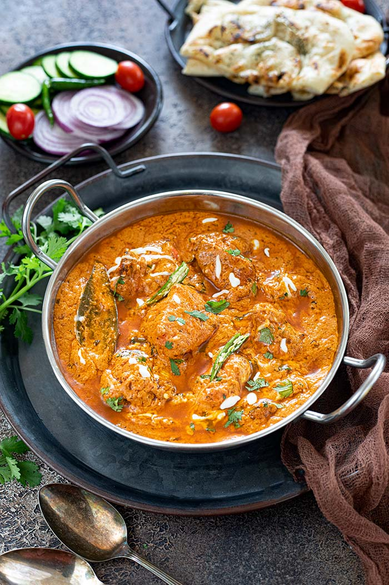
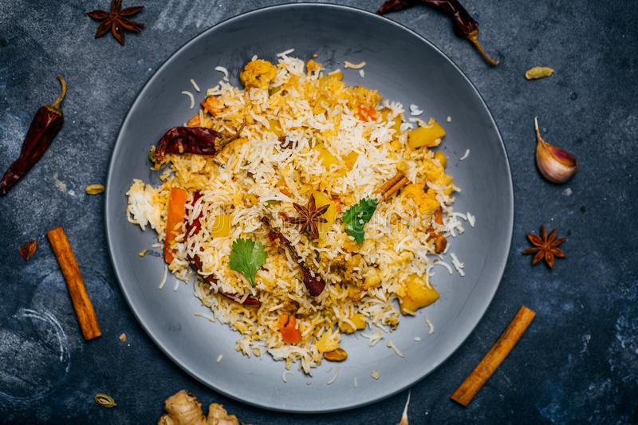
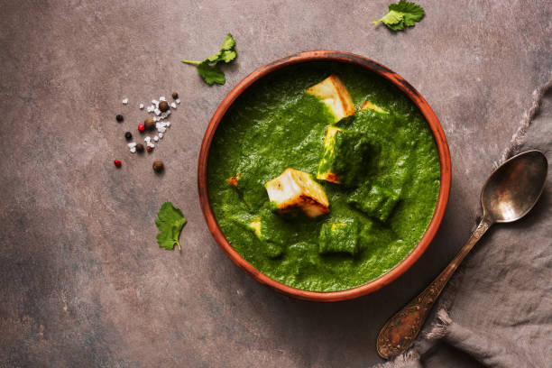
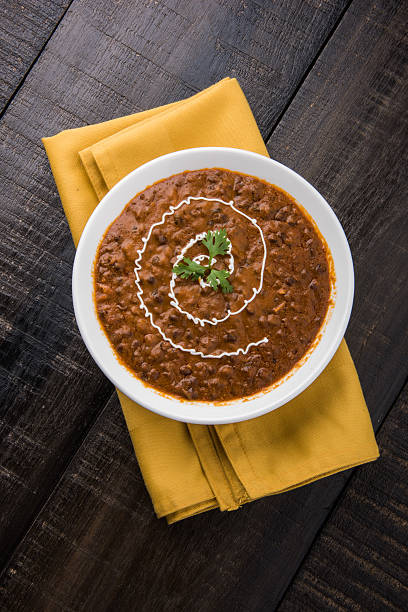
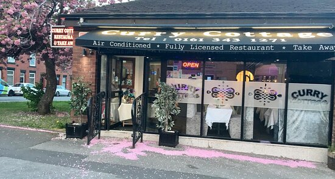
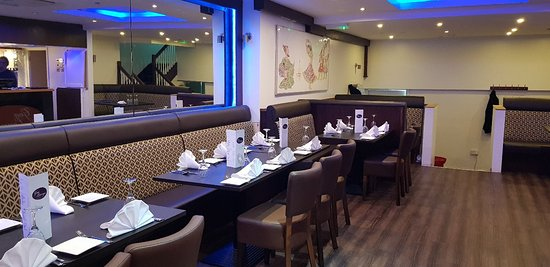

Welcome to Curry Cottage Indian Restaurant, where you may enjoy the
mouthwatering tastes of Indian food. We have a wide variety of meals
on our menu that are made with the finest ingredients and spices
that reflect the rich culinary traditions of India. Whether you want
traditional curries, tandoori fare, or vegetarian selections, we
have something to sate your appetite. Our welcoming environment
makes for the ideal setting for a wonderful dining experience, and
our helpful team is committed to making sure that each visitor
departs with a palette that is satiated. Visit Curry Cottage to
enjoy Indian cuisine!
X
OUR SPECIALITIES

Chicken tikka masala
Chicken tikka masala is a popular Indian dish made with grilled
chicken pieces marinated in spices and cooked in a creamy
tomato-based sauce. It is known for its rich, flavorful taste and
is often served with rice or naan bread.
Dosa
A savoury crepe-like meal from South India is called a dosa. It is
typically served with coconut chutney and sambar and is created
from a fermented batter of rice and lentils. There are different
types of dosas, including plain, masala, and cheese.

Veg Biryani
Veg biryani is a classic Indian dish that features layers of
spiced basmati rice and vegetables. The dish is typically made
with a variety of aromatic spices, including cumin, cardamom, and
coriander, and is often served with raita.

Palak Paneer
Palak paneer is a vegetarian Indian dish made with paneer cheese
and spinach. The spinach is pureed and cooked with a blend of
spices to create a creamy, flavorful sauce, which is then mixed
with chunks of paneer cheese.
Veg Samosa
Samosas are a staple of Indian cuisine and are enjoyed both as a
snack and as part of a meal. They are also commonly found in other
parts of South Asia and the Middle East, where they may be filled
with different ingredients.

Daal Makhni
Daal makhni is a popular Indian dish made with black lentils,
kidney beans, and a rich, creamy tomato-based sauce. It is
typically served with rice or naan bread.It is a hearty, flavorful
vegetarian dish that is enjoyed throughout India.
Meet our team
Curry Cottage boasts a team of skilled chefs, led by Head Chef Abhinav
Dua. Together, they craft a delectable menu that features traditional
Indian cuisine fused with modern twists, showcasing their passion for
cooking and culinary expertise. Abhinav Dua, an accomplished
chef with years of experience, leads the team at Curry Cottage. He is
dedicated to creating unique and delicious dishes that highlight the
vibrant flavors of India. The team is made up of talented chefs who
have been carefully selected for their skill and creativity in the
kitchen. They work tirelessly to ensure that every dish is prepared
with the utmost care and attention to detail. Together, they bring a
wealth of knowledge and passion to the Curry Cottage kitchen,
resulting in an unforgettable dining experience for every. Learn More...
Management
The management staff of a restaurant is responsible for overseeing
both the front-of-house and back-of-house teams, which involves duties
such as creating work schedules, procuring inventory, and monitoring
financial performance. The management team typically comprises a
general manager, assistant manager, and shift supervisors, with the
general manager holding the authority to make significant decisions
regarding the menu, hiring, and budgeting. The shift supervisors are
responsible for the day-to-day operations and staff management, while
the assistant manager serves as a mediator between the
management staff and employees. The success of the restaurant
relies heavily on an efficient management team that can ensure
profitability and customer satisfaction. Learn More...

Other Outlets
Curry Cottage is a well-known restaurant that offers a diverse
selection of Indian, Bangladeshi, and Nepalese cuisine. Besides its
main restaurant, the establishment has a separate takeaway div that
enables customers to enjoy their favorite meals at home. The takeaway
area offers an extensive range of dishes, including appetizers,
curries, tandoori items, and desserts. Moreover, the restaurant
provides catering services for various events, such as weddings,
corporate meetings, and private parties, with a catering menu that can
accommodate specific dietary needs. The restaurant's bar serves a
variety of drinks, including wines, spirits, and beers, that can
complement its food offerings. Overall, Curry Cottage provides a
variety of dining options to cater to the diverse tastes and
preferences of its customers. Learn More...

Restaurant Theme
A restaurant's theme is an important aspect that helps create a unique
and memorable dining experience. The modern theme of curry cottage
emphasizes sleek and sophisticated designs with contemporary features
that set them apart. Our restaurant showcases an open-concept layout
with visible kitchens, giving customers a chance to observe food
preparation. The restaurant's minimalist design incorporates natural
materials like wood, concrete, and metal that provide a warm and
inviting atmosphere. The menu also reflects the restaurant's modern
theme, with a focus on fresh, locally sourced ingredients and unique
flavor combinations. Additionally, presentation plays a significant
role in enhancing the dining experience, and each dish is carefully
arranged to be visually appealing. Learn More...
Grab and Go!
Curry Cottage offers a take-out service to enable customers to savor
their preferred Indian dishes in the comfort of their own homes. This
service is available during the restaurant's regular hours of
operation, and orders can be placed online or by phone. The
restaurant's take-out service is highly convenient and swift, with
most orders prepared for pickup within 15-20 minutes. The menu at
Curry Cottage boasts an extensive range of dishes, including
vegetarian and vegan options, and customers can personalize their
orders to meet their preferences. The restaurant utilizes
premium-quality packaging to ensure that the food remains fresh and
hot during transit. Curry Cottage's efficient take-out service has
simplified the process of enjoying its flavorsome Indian cuisine at
any time and from any location. Learn More...
Join our Loyalty Program
The Curry Cottage customer loyalty program is a way for us to
express our gratitude to our regular customers. Members who sign up
have access to exclusive benefits including preferential seating,
complimentary meals, and savings. Register today to start receiving
rewards!

 Dosa
Dosa
 Veg Samosa
Veg Samosa